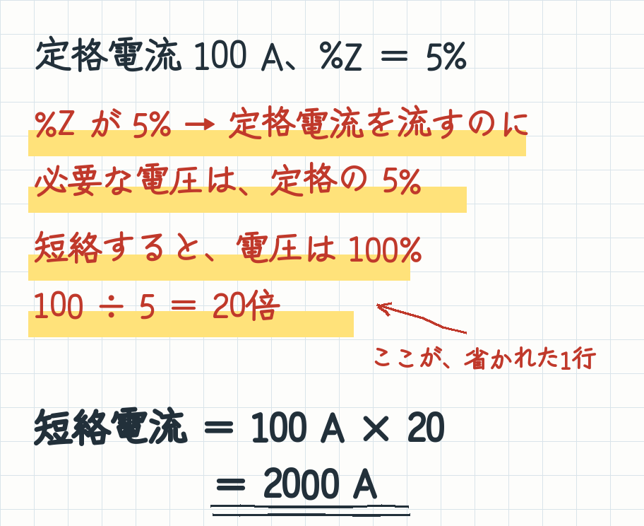

資格で、仕事と暮らしの選べる道を増やしたい人へ
電験三種・一陸特・一陸技の勉強で、
計算に入ったとたん手が止まったら
計算で止まるのは、頭のせいではありません。
参考書では、途中の式が省かれています。その式を書き足します。
筆算堂の辞典は、止まる所を1ページに1つずつ、ふだんの言葉と手書きの筆算で解きます。
たとえば、こんな問題で止まります
問題定格電流 100 A、%Z（パーセントインピーダンス）＝ 5% の変圧器があります。二次側で短絡したとき、短絡電流は何 A ですか。
参考書の解答には、次の式が1行だけ書かれていることがあります。
なぜ 100 を掛けて、5 で割るのでしょうか。その理由にあたる1行が、省かれています。ノートに書き足すと、次のようになります。

この辞典では、こうした「省かれた1行」を、1ページに1つずつ説明しています。
勉強している資格を選んでください
電験三種
√3、%Z（パーセントインピーダンス）、j の付いた数、力率の計算で止まっている人へ。
いま、止まっている計算がある
電験三種の解説を探すどこが弱いのか、自分でも分からない
10問の点検で確かめるまずは、軽く試してみたい
1問だけ解いてみる一陸特・一陸技
dB（デシベル）、dBm、対数、単位の計算で止まっている人へ。
いま、止まっている計算がある
一陸特・一陸技の解説を探すどこが弱いのか、自分でも分からない
10問の点検で確かめるまずは、軽く試してみたい
1問だけ解いてみる点検の採点は画面の中で行い、どの選択肢を選んだかは送りません。合格を約束する物ではありません。楽に受かる試験ではない、と正直に書きます。
止まるのは、あなただけではありません
これらの資格は、学歴や実務の経験がなくても受けられます。だから、別の仕事から挑む人が多くいます。ところが参考書を開くと、最初に出てくるのは仕事の話ではなく、計算です。「入門の本ですら、読めなかった」。質問の場には、こう書く人が繰り返し現れます。多くの場合、足りないのは才能ではありません。紙の上で省かれた、途中の式です。
問題を解く人は、読み取り（与えられた量と条件をつかむ）、立式（使う決まりと式を選ぶ）、計算（分数・√・累乗・単位と桁を処理する）、確かめ（答えの大きさと単位を見る）の4つの段を順に通ります。止まるのは、このどこか1つです。この辞典は、解説のはじめに、どの段で止まるのかと、その理由を名指しします。
この辞典は、電験三種と無線の資格の、計算の本と問題集を作っている筆算堂が書いています。数値と例題は自分たちで作り、計算を実行して確かめています。過去問題そのものではありません。
使い方は、3つの手順です
- 止まっている所を、1つ選ぶ：資格の入口から、いま止まっている計算のページを開きます。
- 1ページで解く：先に答え、止まる段とその理由、なぜそうなるのか、小さな数での確かめ、の順に読みます。
- 確かめの1問を解く：自分の手で1問解きます。まだ不安が残るときは、同じ型の問題を扱う本を、1冊だけ案内します。
たとえば、次のようなページがあります。どれからでも読めます。
- 電力の大きさを別の目盛り（dBm）で言い直すと、なぜ 1 W が「30」になるのか一陸特・一陸技 デシベル
- 三相の電気で「√3 を掛ける」と習ったのに、なぜ3倍しなくてよいのか電験三種 三相交流
- 交流の問題に入ったとたん、j という見慣れない記号が出てくるのはなぜか電験三種 交流と複素数
- 「10 log」と「20 log」、似た式が2つあって、どちらを使えばよいのか一陸特・一陸技 デシベル
- 「%Z」（パーセントインピーダンス）の計算で、100 を掛けるのか割るのか電験三種 パーセントインピーダンス
取ったあとの自分を、先に思い描く
手に職を付けたい。いまの仕事の先が見えにくい。長く続けられる仕事に移りたい。始めた理由は、計算ではなかったはずです。資格を取れば暮らしが良くなる、とは約束できません。約束できるのは、計算の1行で止まったまま、あきらめずに済むようにすることです。
- ビルや工場の電気を、止めないように見守る人になる電験三種 電気設備の保安の監督
- 携帯電話や防災の無線が、つながり続けるように支える人になる一陸特 基地局などの無線の設備
- 放送局を含む、すべての無線局を任される人になる一陸技 無線の設備の技術の操作
どれも、資格を持つ人を置くことが法律で決められている仕事です。
この辞典の決まり
- 1ページに、止まる所を1つだけ書きます。
- 解説のはじめに、どの段で止まるのかを名指しします。
- いまお使いの参考書は、そのまま使ってください。止まった所だけ、ここで引いてください。
- 解説の途中には、案内を置きません。読み終えた後に、合う本や問題集を1つだけ示します。
- 読まれ方を数えています。数えている物と、数えていない物は、このページに書いています。
すべてのページは、ページの一覧から開けます。
最終更新：2026年11月15日